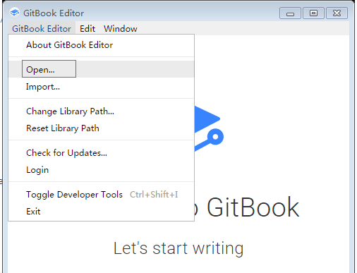
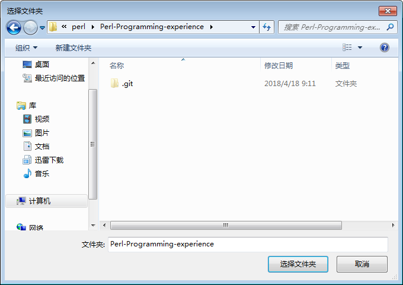
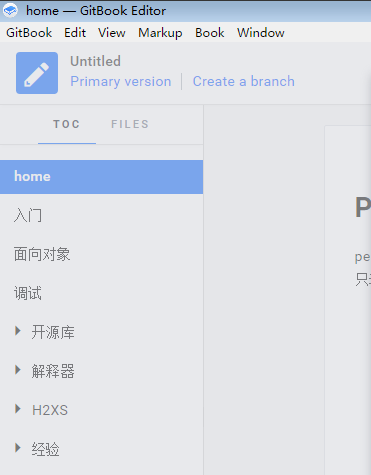

1. Gitbook-example
本文介绍使用gitbook制作Perl-Programming-experience文档并将其发布到个人网站的详细过程。
1.1. 工具准备
1.1.1. 安装gitbook editor
下载地址：https://legacy.gitbook.com/editor
1.1.2. 安装git客户端
下载地址：https://git-scm.com/download/win
1.1.3. 安装nodejs
下载地址：https://nodejs.org/zh-cn/
1.1.4. 安装gitbook-cli
打开cmd命令行窗口，输入
npm install gitbook-cli -g
1.1.5. 安装calibre-ebook
下载地址：https://calibre-ebook.com/download_windows
1.2. 编写文档
1.2.1. 构建git项目
- 在git操作新建项目，命名为：Perl-Programming-experience
本文在github建立的项目为：https://github.com/gwlwmm/Perl-Programming-experience
有关git操作，请另搜资料。
- 新建项目后，初始化新建README.md（任意内容）
1.2.2. 本地下载git项目
- 在git上，为当前windows系统添加ssh key
详细操作，请另搜资料。
在windows打开一个目录，本例为E:\mydata\coderlikewind\perl
单击鼠标右键------->Git Bash Here
下载代码
在git bash窗口执行
git clone git@github.com:gwlwmm/Perl-Programming-experience.git
1.2.3. 使用gitbook editor编辑文档
打开gitbook editor
选择菜单--->GitBook Editor---->open

- 选择E:\mydata\coderlikewind\perl\Perl-Programming-experience

- 编辑文档内容，本例文档内容如下

编写文档几点建议：
- 目录结构就是书籍的目录结构，因此要仔细严谨的命名，错误后再来修改是比较麻烦的。
- 如对目录项序号没有要求，无需为目录结构编写序号，可以在发布文档时自动生成。
- 编写文章内容时，具有层次结构，Paragraph从Heading1开始
- 保存文档时，如果提示文件有改动，请勿理会，稍等一会儿，这个是软件有问题。如果点击任何按钮，可能导致改动丢失。
- 编辑器会修改git状态，并且会检查目录下的文件改动。例如，在目录下直接增加a.md，打开编辑器时，会提示新增文件，此时选择sync，则会修改git 状态，类似git add a.md; 而如果选择discard，则a.md会被删除。所以，如果想不通过编辑器修改项目文件，请不要打开编辑器。
- 编写文档时，各种排版功能，请自行试验。
1.3. 制作gitbook
1.3.1. 配置gitbook工程
- 在E:\mydata\coderlikewind\perl\Perl-Programming-experience下新建文件book.json
文件格式，使用notepad++改为：unix，UTF8无BOM格式
本例主要添加插件及插件配置。
- plugins是插件配置，插件名前面添加减号，表示禁用插件，插件名后边@指定插件版本
- pluginsConfig是插件对应的配置
- 所有插件（及插件配置），可在https://plugins.gitbook.com/查看
{
"plugins": [
"expandable-chapters-small",
"anchor-navigation-ex@0.1.8",
"-sharing", "sharing-plus",
"splitter",
"tbfed-pagefooter",
"-lunr", "-search", "search-plus",
"prism", "-highlight",
"github",
"donate",
"get-pdf-link",
"theme-comscore"
],
"pluginsConfig": {
"expandable-chapters-small": {},
"tbfed-pagefooter": {
"copyright":"Copyright (C) Gong Weilin 2017",
"modify_label": "该文件修订时间：",
"modify_format": "YYYY-MM-DD HH:mm:ss"
},
"anchor-navigation-ex": {
"associatedWithSummary": false,
"mode": "float",
"multipleH1": true,
"showLevel": true
},
"prism": {
"css": [
"prismjs/themes/prism-tomorrow.css"
]
},
"github": {
"url": "https://github.com/gwlwmm/"
},
"sharing": {
"douban": false,
"facebook": false,
"google": true,
"hatenaBookmark": false,
"instapaper": false,
"line": false,
"linkedin": false,
"messenger": false,
"pocket": false,
"qq": true,
"qzone": true,
"stumbleupon": false,
"twitter": false,
"viber": false,
"vk": false,
"weibo": true,
"whatsapp": false,
"wechat": true,
"all": [
"facebook", "google",
"weibo", "qq"
]
},
"donate": {
"wechat": "/docs/assets/weixin.jpg",
"title": "",
"button": "欢迎交流",
"wechatText": "微信"
},
"get-pdf-link": {
"base": "/Perl-Programming-experience.pdf"
},
"theme-default": {
"showLevel": true
}
}
}
1.3.2. 制作pdf
打开E:\mydata\coderlikewind\perl\Perl-Programming-experience
鼠标单击右键---->Git Bash Here
gitbook install
gitbook pdf ./ Perl-Programming-experience.pdf
1.3.3. 预览gitbook
gitbook serve ./
在浏览器打开http://localhost:4000即可查看
1.3.4. 发布到个人网站
将E:\mydata\coderlikewind\perl\Perl-Programming-experience\_book复制到服务器后台/home/www/pub/perlprogramex
为服务器apache配置添加：
<Directory "/home/www/pub">
Options None
AllowOverride None
Require all granted
Deny from env=blockAccess
AddType text/plain .shtml .php .php3 .phtml .phtm .pl .py .cgi
</Directory>
Alias /perlprogramex "/home/www/pub/perlprogramex"
访问文档: http://x.x.x.x/perlprogramex
注意：在book.json的插件配置中有指定weixin.jpg等资源绝对路径，发布到网站时，应该调整绝对路径。
要重新生成_book，可执行
gitbook build
1.4. 提交改动到git项目
打开E:\mydata\coderlikewind\perl\Perl-Programming-experience目录
如果不需要gitbook生成的数据，可以删除子目录_book，以及node_modules
鼠标单击右键---->Git Bash Here
git add ./*
检查文件改动是否正常：git status
git commit -m 'Commit all docs'
git push origin master
注：如果在先前操作中，由于gitbook editor中执行sync，修改了文件状态，可以在最后一次提交时，也打开gitbook editor，让其重新修改文件状态即可。同样在git bash中执行git push 提交到git。
1.5. 参考资料
https://github.com/GitbookIO/gitbook/blob/master/docs/setup.md
https://github.com/GitbookIO/gitbook
https://toolchain.gitbook.com/